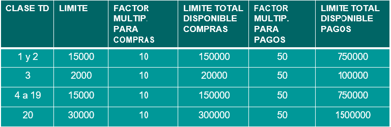

información al Titular de Cordobesa Débito acerca límite de extracción diario y para compras.
Criticidad: Bajo, no aplica roleo y no requiere validación.
Nivel de Hold: Bajo, no es necesario usar el tiempo de hold.
Indicamos al cliente que a través de BANCÓN puede realizar la modificación del límite de extracción y compras. Ingresando a la APP:
Autogestión ➜ Consultas/ Modificación de límite.
• El límite para realizar compras a través de Internet es el mismo que el de Extracción Diaria. Por ejemplo, si el cliente posee una Cordobesa de débito de clase 20 podrá operar on-line hasta un importe de $30.000
•Debe solicitar una “Solicitud de ampliación Temporal de límite para transferencias”. Las solicitudes deberán cursarse con una antelación mínima de 48hs, pudiendo efectuarse tanto por cajero automático o BANCÓN requiriendo la validación mediante SFA (segundo factor de autenticación). (Ver instructivo 499- Consulta General de Transferencias punto 3.3)
•Los límites para transferencias funcionan de acuerdo al canal elegido para efectuar la operación, no a la clase de la Cordobesa:
•Estos límites se convierten a dólares y de dólares a la moneda local.
•El límite será el disponible asignado al cliente convertido a dólares, teniendo en cuenta que cada banco designa la restricción en los límites para clientes no propios de estas entidades, esto quiere decir que el monto puede disminuir de acuerdo con la entidad que el cliente opere en el extranjero.
•Con respecto a las compras el límite estará vinculado al saldo que posea en la caja de ahorro.
•El límite de extracción está asociado a la Cordobesa de Débito, actualmente el importe parametrizado por defecto es de $8.000. En nuestros Cajeros y Centros Punto Bancor, nuestros clientes pueden extraer diariamente ese importe (o hasta $30.000 si solicitaron aumento de límite).
Dependiendo de la Red: